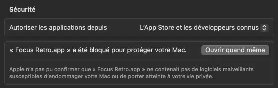

Le multicompte, sans la prise de tête.
Focus Retro bascule automatiquement sur votre fenêtre Dofus Retro quand c'est votre tour, quand vous recevez une invitation de groupe ou une demande d'échange.
Gratuit & open sourceC'est autorisé par Ankama ?

Bonjour, l'utilisation d'un logiciel tiers est tolérée UNIQUEMENT s'il ne modifie/n'interagit pas avec les fichiers du jeu ou le jeu en lui-même.
Ne s'agissant pas d'un outil officiellement pris en charge par Ankama, nous vous rappelons que nous ne pouvons pas garantir la sécurité du logiciel et que son utilisation peut comporter des risques. En cas d'éventuelles violations de données ou de logs, le joueur sera tenu responsable.
Il est également important de distinguer un outil de gestion de fenêtre d'autres outils tiers comme les macros, ces dernières sont strictement interdites.
Focus Retro est un outil de gestion de fenêtre : il lit uniquement les notifications OS, sans jamais toucher aux fichiers du jeu. Code source public et auditable.
Sécurité
Téléchargez uniquement depuis GitHub
Des sites tiers redistribuent des binaires modifiés d'outils communautaires Dofus - certains contiennent des keyloggers ou des stealers.
Focus Retro n'est distribué que via GitHub, sur le repo alacroix/focusretro.
Chaque release est accompagnée d'une attestation de build signée par GitHub Actions : c'est la preuve que le binaire a été compilé automatiquement depuis le code source, sans intervention humaine. Consulter les attestations.
Vérifiez les attestations de build sur GitHub avant de télécharger.
Fonctionnalités
Combat
Focus automatique à votre tour
Dès que c'est votre tour, la bonne fenêtre de jeu passe au premier plan. Aucune manipulation manuelle.
Accès rapide
Roue rapide de personnages
Maintenez votre raccourci pour faire apparaître une roue de sélection sous votre curseur. Survolez un personnage et relâchez - la fenêtre bascule instantanément.
Inspirée de la Roue de Focus de Dosoft par Luframe. 🎩
Comptes
Détection automatique des fenêtres
Focus Retro repère toutes vos fenêtres Dofus Retro ouvertes, même si vous en ouvrez ou fermez en plein combat. Réorganisez-les par glisser-déposer : l'ordre est mémorisé.

Personnalisation
Chaque personnage, à votre image
Assignez une couleur et une icône à chaque compte pour les identifier d'un coup d'œil, même quand plusieurs fenêtres sont ouvertes.

Fenêtres
Mise en page automatique des fenêtres
Organisez vos fenêtres en grille pour toutes les voir d'un seul clic. Idéal pour monter les métiers de récolte ou enchaîner les archimonstres.
Communication
Messages privés centralisés
Tous vos MP reçus sur n'importe quel personnage sont regroupés dans un onglet dédié. Vous ne perdez plus un message important au milieu du multicompte.

Et les petits plus qui font la différence
100 % non-intrusif
Focus Retro lit uniquement les notifications OS. Zéro interaction avec les fichiers ou le code du jeu.
Raccourcis globaux
F1 / F2 / F3 pour passer d'un personnage à l'autre - fonctionnent même quand Dofus est au premier plan. Entièrement personnalisables au clavier ou à la souris.
Français · English · Español
L'interface s'adapte automatiquement à la langue de votre système.
Focus Retro vs les autres outils multicompte Dofus Retro
| Focus Retro | Dracoon | Dosoft | Xixou Switcher | |
|---|---|---|---|---|
| Auto-focus | ||||
| Roue rapide | ||||
| Layouts | ||||
| Version offline | ||||
| Open source | ||||
| macOS |
Informations basées sur les versions publiques disponibles au moment de la rédaction. Dosoft, Dracoon et Xixou Switcher sont des projets communautaires indépendants.
Installation
Prêt en moins de 2 minutes.
-
1
Ouvrez le fichier .dmg
Double-cliquez sur le fichier téléchargé pour monter le disque.
-
2
Glissez Focus Retro dans Applications
Faites glisser l'icône Focus Retro vers le dossier Applications dans la fenêtre du dmg.
-
3
Vous voyez « L'élément "Focus Retro.app" ne peut pas être ouvert » ?
La signature de l'app n'est pas encore en place (ça coûte un petit billet) - c'est pour ça que macOS bloque l'app au premier lancement.
En attendant, allez dans Réglages Système → Confidentialité et sécurité, faites défiler jusqu'en bas et cliquez sur « Ouvrir quand même ».
-
4
Accordez la permission Accessibilité
Au premier lancement, une fenêtre vous demande la permission. Allez dans Réglages Système → Confidentialité et sécurité → Accessibilité → activez Focus Retro.
-
5
Activer les notifications sur Dofus Retro
Dans Dofus Retro, allez dans Options → Général et activez l'option « Notifications en arrière-plan ». À faire pour chaque fenêtre Dofus ouverte. Sans ça, Focus Retro ne recevra aucun événement.

-
6
Autoriser « Dofus Retro » dans macOS
Dans Réglages Système → Notifications, trouvez « Dofus Retro » et activez les notifications. Sélectionnez « Bannières ».

-
✓
C'est prêt !
Focus Retro apparaît dans la barre de menus. Lancez Dofus Retro et jouez normalement.
-
1
Lancez l'installeur
Double-cliquez sur le fichier .exe téléchargé.
-
2
Windows SmartScreen vous avertit ?
La signature de l'app n'est pas encore en place (ça coûte un petit billet) - c'est pour ça que Windows SmartScreen affiche cet avertissement.
Cliquez sur « Informations complémentaires » puis sur « Exécuter quand même ». -
3
Activer les notifications sur Dofus Retro
Dans Dofus Retro, allez dans Options → Général et activez l'option « Notifications en arrière-plan ». À faire pour chaque fenêtre Dofus ouverte.
-
4
Autoriser « Dofus 1 » dans Windows
Allez dans Paramètres → Système → Actions et notifications, trouvez « Dofus 1 » dans la liste et activez-le. Activer les bannières est optionnel.


-
✓
C'est prêt !
Focus Retro apparaît dans la barre des tâches. Lancez Dofus Retro et jouez normalement.
FAQ
Est-ce que je risque d'être banni ?
Non. Ankama tolère officiellement les outils de gestion de fenêtre qui n'interagissent pas avec les fichiers du jeu. Focus Retro lit uniquement les notifications système de votre OS - il ne touche jamais au jeu lui-même. Source : @DOFUSRetro_FR
C'est un bot ou une macro ?
Non. Les bots et les macros sont interdits, et Focus Retro n'est ni l'un ni l'autre. Il se contente de mettre votre fenêtre au premier plan - exactement comme si vous cliquiez dessus. Vous jouez toujours vous-même.
Est-ce qu'il joue à ma place ?
Non. Focus Retro bascule uniquement la fenêtre au premier plan. Vous devez toujours jouer votre tour vous-même.
Est-ce qu'il collecte mes données ?
Non. Focus Retro ne collecte, n'envoie et ne stocke aucune donnée personnelle. Tout reste sur votre machine.
La seule connexion réseau est la vérification de mise à jour au lancement, qui interroge uniquement GitHub Releases pour comparer les numéros de version. Aucune information sur vous ou votre usage n'est transmise.
Le code source complet est disponible sur GitHub - vous pouvez l'auditer, le compiler vous-même et vérifier chaque ligne.
Quelle différence entre la version standard et la version offline ?
C'est gratuit ?
Oui, entièrement gratuit et open source (licence MIT). Aucun compte, aucun abonnement, aucune donnée collectée.
Ça apporte quoi de plus qu'Organizer ?
Oui. Focus Retro détecte toutes vos fenêtres Dofus Retro ouvertes et bascule automatiquement sur la bonne.
J'ai un problème, où demander de l'aide ?
Rejoignez le serveur Discord - c'est l'endroit le plus rapide pour obtenir de l'aide. discord.gg/zyAur7wzvc
Quels systèmes sont supportés ?
macOS 12 (Monterey) ou plus récent - Intel et Apple Silicon. Windows 10 version 1903 ou plus récent, Windows 11.